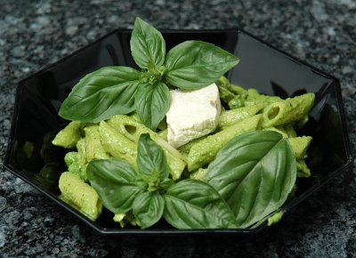

| Zutaten für 4 Personen: | |
| 5 dl | Hühnerbouillon |
| 300g | Pouletbrüstchen |
| 25g | Pinienkerne |
| 2 Bund | Basilikum |
| 1 | Knoblauchzehe |
| 50g | frisch geriebener Parmesan |
| 1 | Zitrone, Saft von |
| 1 dl | Olivenöl |
| Salz, schwarzer Pfeffer aus der Mühle | |
| 300g | Penne |
| 100g | tiefgekühlte Erbsen |
In einer kleinen Pfanne die Bouillon aufkochen. Die Pouletbrüstchen hineinlegen und zugedeckt auf kleinstem Feuer vor dem Siedepunkt 12-15 Minuten gar ziehen lassen. In der ungedeckten Pfanne im Sud etwa 1/2 Stunde abkühlen lassen.
Inzwischen eine Pfanne leer erhitzen und die Pinienkerne darin ohne Fettzugabe leicht rösten.
Pinienkerne in ein hohes Gefäss geben. Abgezupfte Basilikumblätter, die geschälte und geviertelte Knoblauchzehe, Parmesan, Zitronensaft, Olivenöl, Salz und Pfeffer beifügen. Alles mit dem Stabmixer gründlich pürieren, wenn nötig nachwürzen.
Die Penne in reichlich kochendem Salzwasser nur gerade bissfest garen. Die letzten 3-4 Minuten die Erbsen beifügen und mitgaren.
Gleichzeitig die Pouletbrüstchen aus dem Sud heben und schräg in Scheiben, dann in Streifen schneiden.
Penne und Erbsen in ein Sieb abschütteln, kurz kalt abschrecken und sofort mit den Pouletstreifen zur Pesto Vinaigrette geben. Sorgfältig mischen.
Der Salat schmeckt am besten frisch zubereitet, so lange das Huhn noch lauwarm ist. Nie im Kühlschrank aufbewahren, die Zutaten verlieren dadurch ihr Aroma!
Zutaten halbieren.
1 kleines Pouletbrüstchen verwenden. Anstelle des hausgemachten Pestos ein Fertigprodukt verwenden und dieses mit etwas Zitronensaft und Olivenöl zu einer Sauce rühren. Penne und Erbsen nach Rezept in 1/4 Menge zugeben
Kochen 6/03, Seite 63
Super! Juni 2003 RE
Schmeckte auch am 17.8.2009 ausgezeichnet. Sandra war begeistert: 4 Plus, ihre Wertung.
Pro Person: 33g Fett, 33g Eiweiss, 61g Kohlenhydrate, 2883 kJ, 689 kcal